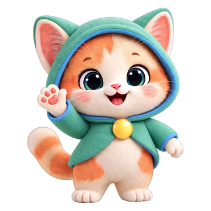
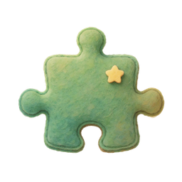
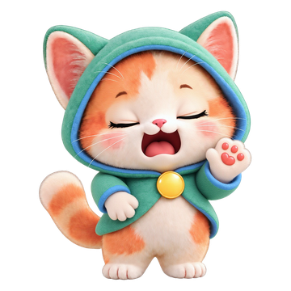

오늘 이야기(일기 모드) 그림 중심 프로토타입
그리는 동안 붓이 멈출 때마다 새로 생긴 조각에 고리가 뜨고 오또가 "이건 뭐 그린 거야?"라고 묻는다. 이야기 질문은 그 사이사이에 끼운다. 다 그리면 그림을 조각별로 오려 스티커로 만들고, 그림일기의 쪽마다 그 조각이 나와 움직인다. 화면은 design/디자인시스템.md 09-28 개편과 실제 오또 그림을 썼다.
🏠🔒
오늘 2권

🏠🔒
오늘 있었던 일을 그려 봐
🏠🔒
🏠🔒
⭐⭐
그림일기를 꿰매는 중…
🏠🔒


이 프로토타입의 규칙
- 그리는 중에도 묻는다. 단, 선과 선 사이 짧은 틈에만. 선이 두 개쯤 쌓이면 "지금 그리는 건 뭐야?" — 계속 그려도 되고 아무 때나 답하면 된다. 긋는 중에는 끼어들지 않고 질문 사이는 그리는 중 3초 · 멈춘 뒤 5초
- 다른 곳으로 옮겨 그려도 앞 조각을 "다 그렸다"고 보지 않는다. 돌아와 그 조각 안쪽에 이어 그리면 "다시 강아지 그리는구나!" — 그 선은 그 조각의 것이다. 바깥으로 크게 뻗는 선(땅 등)만 "더 그린 거야, 새로 그린 거야?"로 묻는다. 물어본 조각을 두고 옮겨 가면 그 조각에 고리를 띄운 채 "이건 뭐 그린 거야?"
- 그리기를 멈추면 이름 없는 조각을 묻고, 없으면 이번에 그린 것들을 한꺼번에 칭찬("강아지랑 우리 집 멋지다!")한 뒤 이야기 질문으로 넘어간다
- 조각은 선의 위치로 묶는다. 가까운 선끼리 한 조각이다. 색도 시간도 보지 않는다. 떨어진 선이라도 어떤 조각 영역 안에 절반 이상 들어가면 그 조각(눈 · 무늬), 그리던 조각 가까이(그 크기의 절반, 20~30)면 그 조각(떨어진 팔다리)이다. 단, 이름을 받은 두 조각을 한 선이 같이 건드려도 둘을 합치지 않는다. 그 선은 더 많이 겹친 쪽에만 붙는다
- 무엇인지는 대화로 정한다. 새 조각엔 "지금 그리는 건 뭐야?" · "이건 뭐 그린 거야?", 이름 받은 조각이 바깥으로 커지면 "모래성에 더 그린 거야, 새로 그린 거야?". "새로 그렸어, 땅이야"면 이름 뒤에 그은 선만 떼어 새 조각이 된다. 안쪽에만 더 그리면 묻지 않는다(문 · 창문)
- 그래도 잘못 묶이면 D2에서 자른다. 스티커 하나 → [✂️ 자르기] → 떼어 낼 선을 톡 누르거나 동그라미로 감싸기 → [떼어 내기] → 오또가 "이건 뭐 그린 거야?". 둘을 고르면 [붙이기]
- 인식 낱말은 질문 문구에만 쓴다(규칙 5). 조각 이름은 아이가 말한 것만 붙는다. "집처럼 보이네"에 "모래성이야"라고 하면 모래성이다
- 책은 아이 그림을 다시 그리지 않는다(차별점 1). 원본 선을 오려서 옮기고 돌리고 키울 뿐이다. 오리기는 폰 안에서 한다
- [너도 그려줘]를 누르면 묻지 않고 바로 "나도 그려볼게! 더 그리고 있어!" — 방금 그리던 조각을 오또도 그린다(이름이 아직 없어도). 말로 "강아지 멋지게 그려줘"라고 해도 된다
- 오또 그림이 오면 이름표에 ✨가 붙고 오른쪽 오또 버튼이 「오또 그림 왔어!」로 바뀐다. 둘 중 어느 쪽을 눌러도 크게 보며 고른다. 이름표는 그리기를 막지 않는다 — 이름표 위에서 짧게 톡은 이름표 누름(점이 안 찍힘), 끌면 그대로 선이 그려진다
- 오또 그림은 뒤에서 만든다. 화면은 그대로이고 아이는 계속 그린다. 다 되면 이름표에 ✨가 붙고 오또가 멈춘 틈에 알려 준다. ✨를 누르면 옆에 작은 고르기 칸 — 원본이 첫 번째. 8초 넘으면 "조금 뒤에 올 거야", 15초면 원본 그대로
- 책은 흰 종이 위의 내 그림 조각뿐이다 — 장소 사진도 미션도 없다. 조각은 그린 자리 그대로(고른 오또 그림이면 그 모습). 쪽마다 1인칭 문장에 나온 조각이 앞으로 나와 문장대로 움직이고(무너졌어요 → 넘어짐 · 쌓았어요 → 쌓아 올라감 · 놀았어요 → 통통 · 갔어요 → 걸어 들어옴 · 속상했어요 → 고개 숙임) 나머지는 흐리게 남는다. 어느 조각이든 도구로 누르거나(✋ 톡 · 🔨 간지러워 · 🪶 깔깔깔 · 🔍 「내가 그린 ○○」) 끌어서 옮길 수 있다
- 인식은 여기서 간단한 모양 규칙으로 흉내 냈다. 실제는 폰 안 ML Kit AutoDraw → 낱말만 Jev (확신 0.6 미만이면 "이건 뭐 그린 거야?"로 연다)